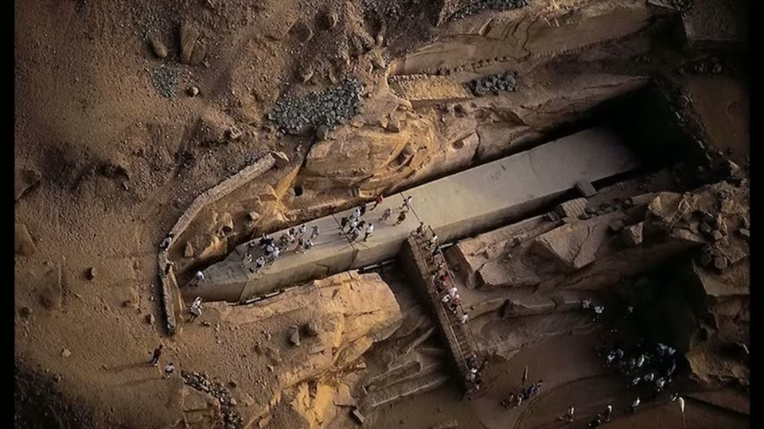
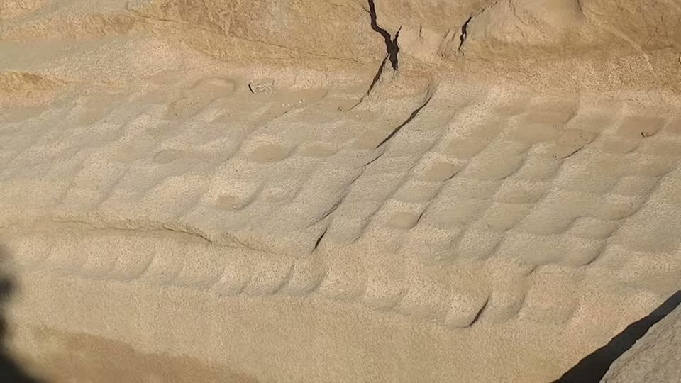
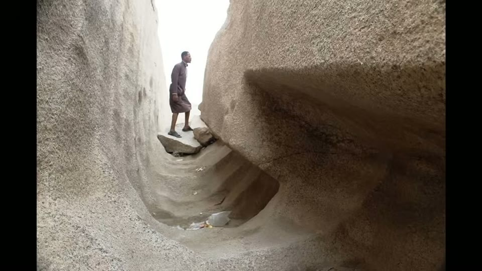
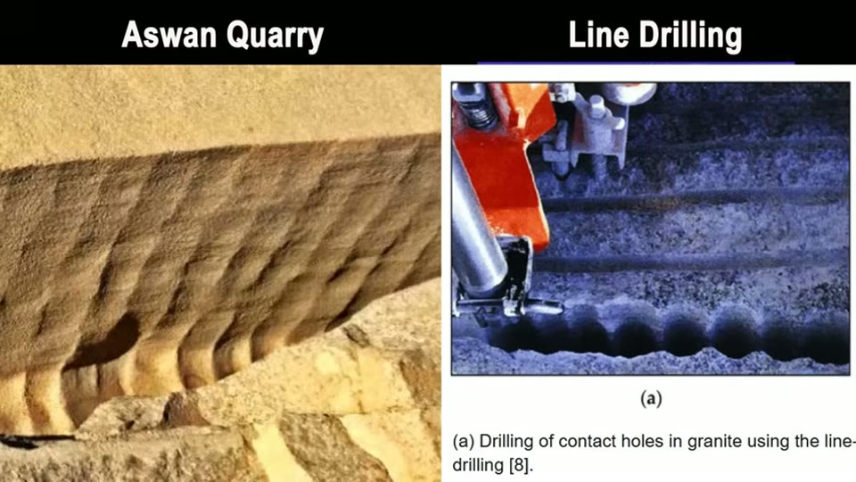
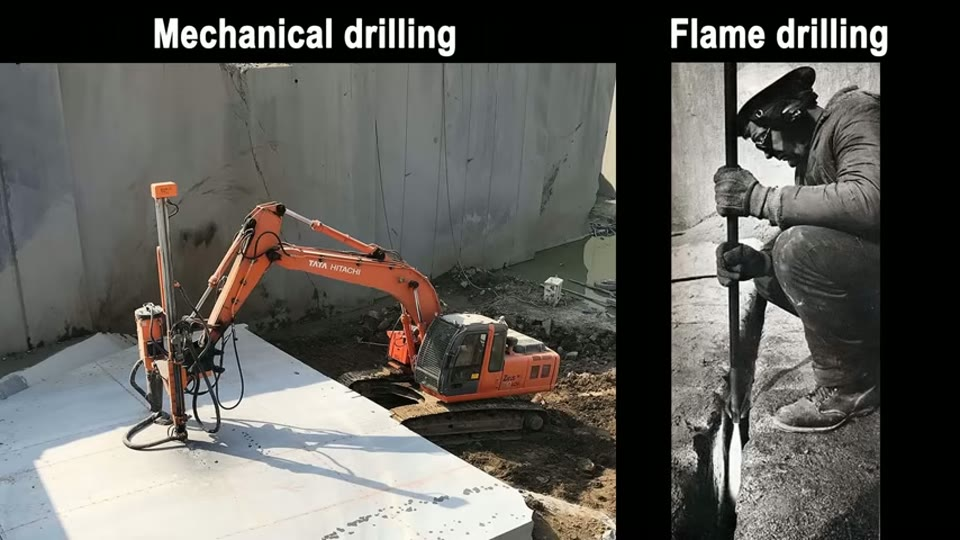
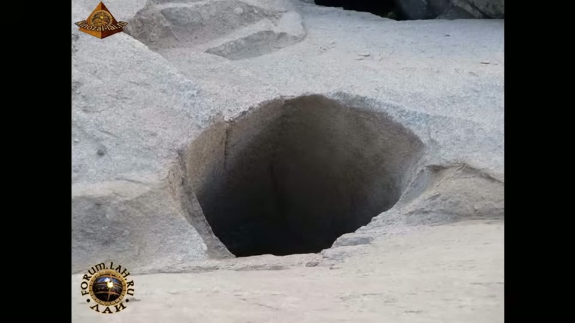

Curious Being
Scoop Marks in Egypt: A Groundbreaking New Hypothesis
Tina · 25 min · watch on YouTube · summarised 2026-08-22
The Unfinished Obelisk lies in the Aswan granite quarry where it was abandoned: 42 m long, around 1,200 tons, still attached to the bedrock along its underside, given up when a crack opened during cutting 00:00–00:35.
Its trench and undersides carry the scoop marks — hollows that look, as she puts it, as though the granite had been softened like butter and shovelled out.

Around 1,200 tons, 42 m long, and still joined to the bedrock along its underside - abandoned where it was cut when a crack opened.
She names the existing explanations rather than inventing an opponent 00:57–01:16: mainstream Egyptology says workers pounded the rock out with dolerite balls; Christopher Dunn proposes a machine with a pivoting arm; Brien Foerster proposes vibrational technology.
And she opens with the observation that ends up carrying the whole argument 01:16–01:45: the same marks appear on the granite beams in the Great Pyramid's relieving chamber, and in a quartzite quarry on the west bank of the Nile. Why do scoop marks only ever turn up on hard, quartz-bearing stone?
Part 1 — granite cannot be softened, and she shows why
This is the strongest passage, and it argues against the most popular alternative reading 03:27–06:47.
Frequency. Ultrasonic and piezoelectric drilling do weaken granite: high-frequency, high-voltage current excites the quartz and opens microcracks, improving drillability. But that is brittle failure being made easier. It does not make rock plastic and cannot reshape it.
Heat. Granite's brittle-to-ductile transition sits around 400–800 °C, but ductile behaviour also needs confining pressure — the all-round squeeze found deep underground. In the lower crust, at 600–900 °C, granite can flow slowly. At the surface, where pressure is low, it cracks or melts instead.
And then the detail that makes it convincing. Even granting the heat and pressure, you have to cool it back. Aswan granite has large crystals because it cooled slowly at depth. Cool the same material in air and the crystals come out small — you get a different rock, with a different texture and mineral arrangement, not Aswan granite.
Her second point is even simpler 06:43–06:52: there is no scooped granite lying around. Whatever left these marks, the material it removed is not sitting in the quarry as scooped lumps.
So the marks were not made by scooping something soft. They were made by a tool that leaves scoop-shaped tracks.
Part 2 — what the marks actually are
Her description is careful and worth having 07:02–08:21:
- areas of square indents "like a strange chessboard", consistently about 40 × 40 cm — which may simply be the size of the tool
- elsewhere the scoops are rounded and curved, suggesting more than one head shape
- surfaces slightly rough and uneven — a scooped look, not a sawn one
- cuts that are not straight, but curved and angled
- a trench around the obelisk averaging 75 cm wide, its sides showing scoop marks as vertical bands about 40 cm across, which curve at the bottom and continue under the obelisk from both sides, leaving a narrow spine still attached

Repeated square hollows about 40 cm across, at slightly varying depths, with soft raised edges rather than the clean rim a drill leaves.

The trench walls carry vertical scoop bands that curve at the bottom and continue underneath the obelisk from both sides, leaving a spine still attached.
She also points at a second place in the quarry where curved scoop marks flank a severed granite stripe 08:21–09:00 — on her reading, another obelisk cut the same way and shipped out. Since the Unfinished Obelisk sits embedded in the middle of the bedrock, and open quarries are worked top down, a great deal of granite came out before anyone reached it. Her inference: the masons practised on smaller obelisks first. About 28 Aswan-granite obelisks survive worldwide.
Part 3 — testing it against modern quarrying
She works through the vertical, top-down block-separation methods in turn 10:01–12:27:
| method | why it does or does not fit |
|---|---|
| blasting | vertical marks are sparse and uneven and need not run the full depth — does not fit |
| line drilling | overlapping circular holes do give curved ridges and a corrugated face, but the Aswan marks are 40 cm wide, far larger than the biggest granite drill bits, and are patchy, bumpy, and change angle mid-cut |
| jet channelling | fits |

Modern line drilling does leave a corrugated vertical face - but at drill-bit scale, with clean regular scallops, not 40 cm hollows with bumpy floors.
The chessboard marks decide it for her: slightly varying depths, soft raised edges, nothing like the clean rim of a drilled hole. Whatever did this was not mechanical and not precise — a first, rough separation stage, not a finishing tool.
The hypothesis: flame-jet channelling
Jet channelling — also flame-jet or torch cutting — entered the granite industry in the 1950s 12:27–15:43. A rocket-jet burner throws a 2,500–3,000 °C flame at the rock; the surface disintegrates by thermal spalling, flaking off under differential expansion, leaving a rough, textured, un-machined finish. Handheld or machine-mounted, it can drive a channel 6 m deep. She shows a worker lowering a flame vertically like a drill, and National Geographic footage of a larger head cutting a 10-inch-deep, 4-inch-wide hole in granite in about three minutes — faster than a diamond drill.

The method she proposes, and the one it has to be told apart from: a torch driven into rock by hand, against a mechanical drill rig.
Then the convergence that makes the video. Flame drilling works well only on quartz-rich hard rock. It fails on quartz-free stone like limestone and dolomite, because those do not spall. Quartz has high thermal conductivity and a large expansion coefficient, so it expands fast under heat and fractures at the grain boundaries.
Which is exactly the distribution of the scoop marks she noted at the start — granite and quartzite, never the softer stone. A hypothesis that predicts a pattern already observed for independent reasons is doing real work.
She adds that jet channelling was retired in the US in favour of diamond saws and wire, and that a company called Petra unveiled robotic non-contact thermal drilling in 2021 at 50–150 cm diameters. With a 40 cm torch, a 75 cm trench needs two overlapping passes.
Her reconstruction
16:31–19:02 In fault-free rock, follow the planned outline: lower a 40 cm torch vertically to drill a line of overlapping holes, leaving ridges between them. Offset outwards a little under 40 cm and drill a second row — which buys the clearance to then turn the torch horizontally, or tilt it upwards, and undercut the obelisk from both sides, stopping while enough rock still holds it to the bedrock.
It accounts for the vertical marks on both trench walls, the curved ragged trench bottom, and the scoops underneath. The chessboard patches she reads as test spots, leftovers from removing an upper layer, or attempts at levelling; the varying scoop shapes as different nozzle heads, since a torch's flame shape follows its nozzle.
It also covers the odd holes in the quarry floor 19:02–19:31 — 1–1.5 m across, 1–5 m deep, curved corners, no chisel marks, some with horizontal scoop marks — which she reads as test bores for rock quality below.

Metre-wide holes metres deep, with curved corners, smooth walls and no chisel marks at all - which she reads as test bores for the rock below.
Part 4 — against dolerite pounding
The mainstream case is that no chisel marks appear in the trench and stone balls were found on site. Her objections 19:31–21:29:
- A 2023 paper on the speed and efficiency of dolerite pounding concluded that "the results achieved speak against the use of only dolerite pounders in this process and support the employment of different methods of quarrying."
- Pounding gives no reason to produce square indents, vertical bands, or ridged cuts at the trench bottom.
- The transport problem. At about 1,200 tons the obelisk is 2.6 times heavier than the Lateran Obelisk (~455 tons, and decades in the making), and the best attested Egyptian ships carried around 500 tons. Would anyone quarry something they could not move? She asks whether the quarry canal could float it, or turn a 42 m object at all.
- For scale on the lifting problem: most modern cranes manage 11–66 tons, and the strongest mobile crane in the world, the Liebherr LTM 11200-9.1, tops out at exactly 1,200 tons — and only since 2007.
What you can check yourself
- The distribution of scoop marks — granite and quartzite only, not limestone — is the hypothesis's central prediction and a matter of surveying quarries.
- Flame-jet channelling is a real, documented industry method with published performance figures, and the claim that it fails on non-spalling rock is standard.
- Quartz's thermal expansion and conductivity are tabulated physical properties.
- The 40 cm scoop width against the largest granite drill bits available is two numbers.
- Granite's brittle-to-ductile transition and its dependence on confining pressure are textbook geology, as is the link between cooling rate and crystal size.
- The 2023 dolerite-pounding paper is citable and its conclusion quotable.
- The obelisk's mass, the Lateran obelisk's mass, and ancient ship capacities are all published figures.
- No scooped granite on site is an observation anyone visiting can make.
What the video does not settle
- The prediction she does not test is the one that would settle it. Thermal spalling at 2,500–3,000 °C leaves traces: reddened or discoloured rock, vitrification, heat-fractured grain boundaries, spall debris. Nothing in the video reports looking for heat alteration on the obelisk. This is the single most valuable missing test, and it is a laboratory afternoon.
- Where is the fuel? Flame-jet cutting burns oxygen and a fuel at industrial rates. No trace, no plant, no storage, no discussion.
- The crack goes unexplained — and it points at her hypothesis rather than away from it. A method that works by thermal stress is a candidate cause for the fracture that ended the job, and the video never joins those two facts.
- The 2023 paper says less than it is asked to. "Not only dolerite pounders" supports additional ancient methods — wedges, saws, fire-setting — and is not evidence of lost technology. Quoting it in support of the larger claim overreads it.
- The transport argument works against her too. If the builders were advanced enough to move 1,200 tons, the obelisk should not still be lying there. She says they "must have thought about the logistics", which assumes the thing the abandonment puts in doubt.
- The crane comparison is rhetorical. A 1,200-ton mobile crane is not the only way to move 1,200 tons; barges, sledges, rollers and incremental levering all move masses cranes cannot lift.
- Nothing dates the scoop marks. The quarry was worked by Egyptians, Romans and Arabs, and she says so herself — four kinds of mark are present. Which marks belong to which working is never established.
See also
A Method to Decipher Ancient Machine Marks from Hand Tools — the five-factor test she applies to marks of this kind elsewhere.
What we have not checked
- The transcript renders Aswan as "Awan" throughout; corrected here.
- The 2023 dolerite-pounding paper is not identified — no author, journal or title is given in the video, and it has not been traced. The quotation is reproduced as she gives it.
- The 28 surviving Aswan-granite obelisks, the 500-ton ship capacity, the Lateran Obelisk's 455 tons and the "several decades" are hers and untraced.
- Christopher Dunn's and Brien Foerster's positions are as she summarises them; neither has been checked against their own words.